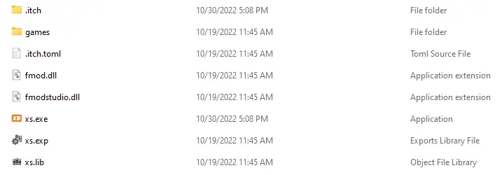
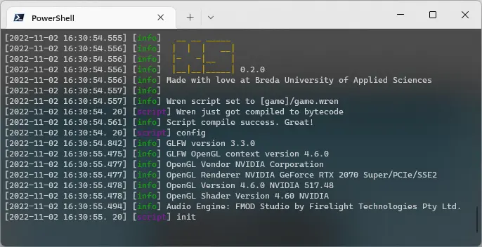
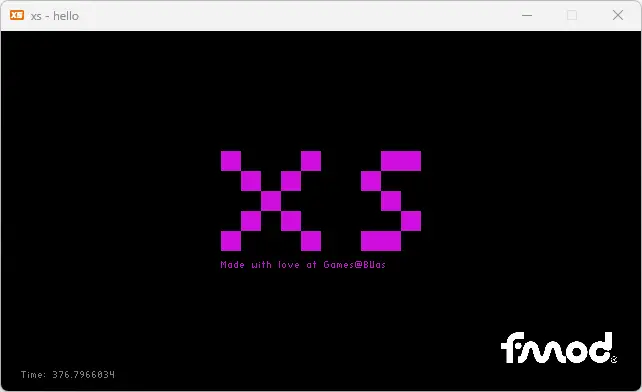

Welcome to xs! This guide will help you create your first extra small game.
First, grab the latest version of xs from the itch.io page. If you are a member of the BUAS organization on GitHub, you can build it from source.

The preferred way of running xs is from the command line (terminal) so you can read the debug output. Open your command line/terminal application and cd to the xs folder. Run the executable and you should get output in the command line. Even better, use Visual Studio Code with the built-in terminal.

On the first run, xs will run the "hello" sample and save a user profile.

Great, xs is up and running!
Creating a new project in xs is quite simple. An xs project is just a folder. This folder needs to have at least one .wren file, that will contain your Game class, and a project.json file that points to it.
The Game class needs to have three static methods:
initialize - Called as soon as all systems have been createdupdate - Called once per tick (frame)render - Called once per tick, right after updateHere's the complete "hello" example:
// This is just confirmation, remove this line as soon as you
// start making your game
System.print("Wren just got compiled to bytecode")
// The xs module
import "xs" for Render, Data
// The game class is the entry point to your game
class Game {
// The init method is called when all systems have been created.
// You can initialize your game specific data here.
static initialize() {
System.print("init")
// The "__" means that __time is a static variable (belongs to the class)
__time = 0
// Variable that exists only in this function
var image = Render.loadImage("[games]/shared/images/FMOD_White.png")
__sprite = Render.createSprite(image, 0, 0, 1, 1)
}
// The update method is called once per tick. Gameplay code goes here.
static update(dt) {
__time = __time + dt
}
// The render method is called once per tick, right after update.
static render() {
Render.dbgColor(0xFFFFFFFF)
Render.shapeText("xs", -100, 100, 20)
Render.shapeText("Made with love at Games@BUas", -100, -50, 1)
Render.dbgColor(0xFFFFFFFF)
Render.shapeText("Time: %(__time)", -300, -160, 1)
Render.sprite(__sprite, 180, -152, 0.16, 0.0, 0xFFFFFFFF, 0x00000000, 0)
}
}Next, just put your awesome art and code in the folder and you have yourself a game!
Wren is a lovely modern scripting language and there are a handful of Visual Studio Code extensions to make working with it nicer.
If you don't have Visual Studio Code, download it here
xs can be instructed (from the system.json) to run on top of other windows. This can be useful when developing or debugging with it. Running xs from the built-in terminal in VS Code will give a "single window"-like experience.
A module in Wren is usually another .wren file that you can import into your code. xs ships with a few modules that let you interact with the engine:
xs - Core API for rendering, audio, input, and morexs_math - 2D vector math, colors, and bit operationsxs_ec - Simple Entity-Component frameworkxs_components - Pre-built components for common game functionalityThe "hello" example starts with importing functionality:
import "xs" for Render, DataThese modules are located in the assets/modules/ folder, so feel free to explore their contents.
From the language itself (learn more):
random - Random number generationPaths in xs are relative and should start with one of the wildcards. For example, you can use the [game] wildcard to access asset files in your game:
var image = Render.loadImage("[game]/images/cat.png")xs supports .png images and a variety of sound files, with .flac being the preferred format.
Now that you're set up, check out the API Reference to learn about all the available modules and functions!
Check out the samples/ folder in your xs installation